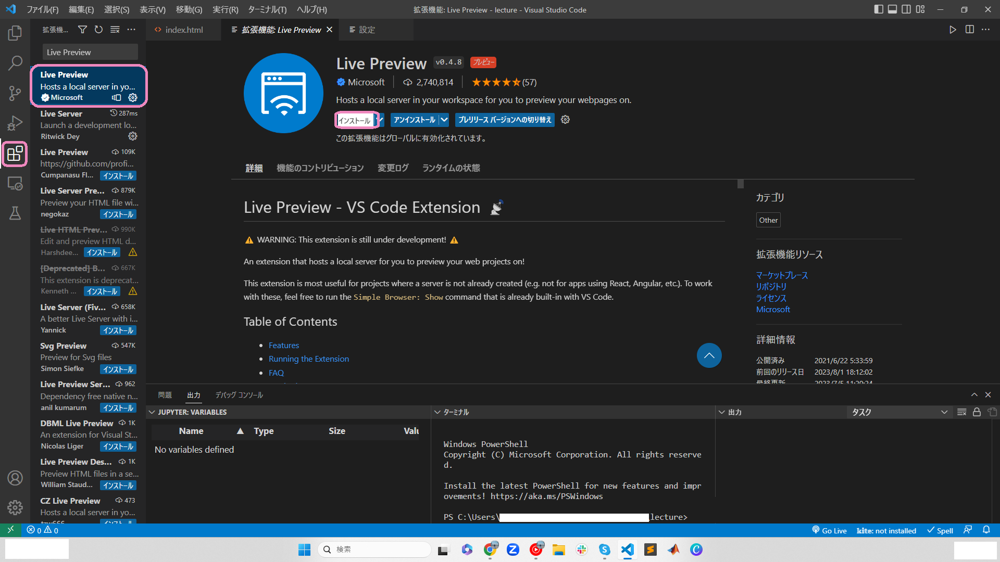

オリジナルウェブサイトを作ろう
STEP1 開発環境を準備しよう
1. パソコンのバージョンについて知ろう
- windowsマークをクリックし、設定を選択

- システム->バージョン情報をクリックする
- システムの種類を見て何ビットか(x数字にも注目)確認してね。
私のパソコンの場合は64bit(x64)でした。
2. Google Chromeをインストールしよう
公式サイトからダウンロードしよう
※64bitか32bitかによってダウンロードするファイルが違うよ
3. Visual Studio Codeをインストールしよう
公式サイトからダウンロードしよう
※64bitか32bitかによってダウンロードするファイルが違うよ
このアプリでコードをかくよ。
- ページにアクセスしてスクロール
- .zipの該当するビット数のものをダウンロード

- エクスプローラー->ダウンロードからダウンロードしたzipファイルを右クリックする
- すべて展開をクリック
- 展開(E)をクリック
- 同じファイル名で.zipでないのがダウンロードにあると思うので
4. GitHubに登録しよう
公式サイトからサインアップしよう
ここでwebサイトを公開するよ
STEP2 パソコンのファイルとフォルダの管理について学ぼう
フォルダとは書類を収納するファイルの役割をし、ファイルは書類1枚1枚を指します。フォルダを作成してその中にファイルを収納していくよ。
1.エクスプローラーを開いてみよう
左上にあるデスクトップ、ダウンロード、ドキュメントなどピン止めされた項目を見つけてみよう。
2.ピン止めされた項目の上で右クリック->プロパティ->全般->場所で収納場所を確認してみよう
- ピン止めされた項目の上で右クリック
- プロパティをクリック

場所はC:¥Users¥ユーザ名だったかな??
3.PC->OS(C:)->ユーザー->ユーザー名を開いてみよう


ピン止めされた項目は見つかったかな？？
PC->OS(C:)->ユーザー->ユーザー名の中にフォルダを作ってデータを管理するのが一般的。
なぜデスクトップに保存しないのか
ホーム画面に常に表示するなどとても容量を食います。そのためデスクトップでの保存はおすすめしません。
なぜC:¥Users¥ユーザ名¥ダウンロードなどの既存のフォルダに保存しないのか
ダウンロードにはダウンロードされたファイルが保存されます。自分用のフォルダを作成した方が整理しやすくなるため作成を推奨しています。
4.PC->OS(C:)->ユーザー->ユーザー名に新しいフォルダを作ってみよう
Ctrl + Shift + Nで作成できるよ(何もないところを右クリック->新規作成->フォルダでも可)
フォルダ名は英語表記でなるべくローマ字ではなく英語として意味を持つものがおすすめ。
STEP3 VScode(Visual Studio Code)でホームページを作ろう
1.VScodeの自動保存機能を有効にする
- VScodeを開く
- ⚙️マークをクリック
- 設定をクリック
- Auto Saveを検索
- afterDelayを選択

2.VScodeでWebサイトを閲覧するための拡張機能をインストールする
- 次に上から5番目のアイコンをクリックする
- HTML Previewと検索する
- インストールをクリック
- Live Previewと検索する
- インストールをクリック

3.VScodeで先ほど作成したフォルダを開こう
4.新しいファイルを作ろう
- ピンクのラインの部分にカーソルを合わせて上にスライドする
- 出力をクリック
- ターミナルを発見
- ターミナルにecho > index.htmlと入力
- index.htmlという新しいファイルを作ることができた
STEP4 HTMLについて学ぼう
1.HTMLとは
HTMLとはコンピューターに人間の意思を伝えるための言語です。Webサイトに文字、画像、リンクを反映させることに役立ちます。
2.手を動かしてみよう
- 以下のhtmlをコピーしてペーストしてみよう
- 好きな画像をダウンロードしよう
おすすめのフリー素材ぺージはこちら
- エクスプローラーのダウンロードフォルダを開いたまま、エクスプローラーアイコンを右クリック
- エクスプローラーをクリック
- エクスプローラーを２画面表示してみよう
- windowsボタンと右矢印または左矢印を押すと画面が片方によるはず
- ダウンロードフォルダにある画像ファイルをドラックアンドドロップする
- 移動できたかな
- vscodeで画像のファイルを右クリックする
- 名前の変更をクリックする
- 画像のファイル名を全選択し、コピーする（この時にファイル名を変えてもOK）
Ctrl+Aで全選択、Ctrl+Cでコピーできます!!

- 画像のファイル名をペースト（貼り付け）を行う
反映されているのが分かりましたか
STEP4 CSSについて学ぼう
CSSとは
CSSとはWebサイトに色の設定などを反映させるための言語の名前です。
- styles.cssという新しいファイルを作成する
- h1の条件をかいてみよう
反映されているのが分かりましたか
- Hello!はオレンジ色にしたい!!どうする？
- ファイルを２画面表示にして見やすくしよう
- class分けすることで実現可能!!
反映されているのが分かりましたか
headerを作成しよう
classの概念について
// HTMLのclassと結びつけて考える
//HTML
<div class = "classic">
</div>
//CSS
.classic{
background-color: white;
color: black;
}
STEP6 作成したホームページを公開しよう
1.GitHubにpushしよう
- コマンドプロンプトを開きます
git -vと入力し、Enterを押す

- バージョンが表示されれば、既にインストール済み。そうでなければ
brew install gitと入力し、Enterを押す
バージョンが表示されない場合は公式サイトからダウンロードしよう
※64bitか32bitかによってダウンロードするファイルが違うよ
- GitHubにpushしたいファイルの変更が終わったら、左の上から3番目のマークをクリックする

- GitHubに公開をクリックし、指示に従って設定を行う

- pushするファイルの隣にカーソルを持っていくと
+が表示されるのでクリックする

- ステージされている...にpushしたいファイルがあるかを確認
- コメントを入力する
- コミットをクリックする

- 変更の同期をクリックする

- OKをクリックする

- GitHubが更新されているか確認してみてください
2.公開したサイトを見てみよう
- GitHubのページを開いてSettingsをクリックする
- 左の項目からPagesをクリックする
- Visit siteをクリックする

サイトは見れましたか